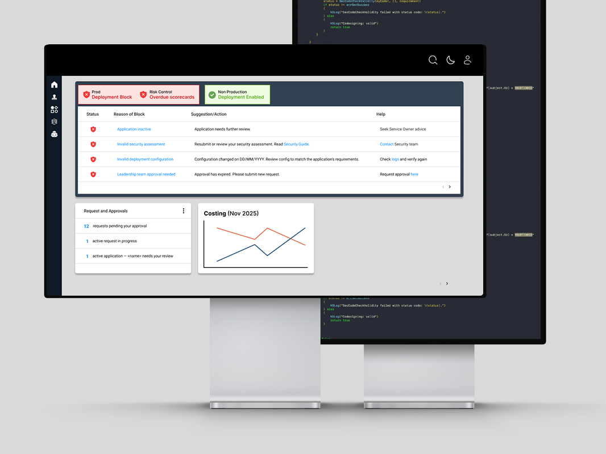

Less Friction, More Velocity: The Hot Bar
Transforming 4–7 day deployment bottlenecks into 24-hour self-service workflows for global engineering, security, and technology teams.
Impact
Measurable outcomes across 6,000+ engineers
<24h
New engineer deployment time, down from 4–7 days
95%
Reported higher clarity on deployment status
60%
Decrease in support escalations globally
90%
Reported increased independence and autonomy
<1h
Resolution time for experienced engineers, down from 1–2 days
90%
Found integrated "Actionable Steps" highly helpful
The App

Background
What is a pre-deployment check?
Pre-deployment checks verify service readiness against Macquarie's quality gates, compliance standards, security requirements, and configuration needs before any code is released to production. For thousands of engineers globally, this was a daily necessity — and a daily source of frustration.
Discovery
Understanding the real problem
Through interviews with 30+ engineers across seniority levels, a critical pattern emerged: an overwhelming "mental load" when navigating legacy compliance gates. Engineers were context-switching constantly between terminals, documentation wikis, and Slack channels just to understand a single error.
The key insight: engineers wanted solutions "where the work happened" — not additional dashboards to check.
The Problem
Three core friction points slowing every team down
The Onboarding Tax
New engineers faced a 72-hour learning curve just to get through their first deployment. This created a "shadow support" model where senior engineers spent 40% of their time guiding juniors through cryptic errors — draining team velocity.
The Dead-End Feedback Loop
Error messages used technical labels without context. Engineers had no idea which file was broken, who owned a given scorecard, or how to resolve a "Legacy Risk Scorecard" block. 4–7 day delays for new hires, 1–2 days for experienced ones.
The Context Gap
Engineers were forced to hunt across fragmented systems — terminals, wikis, Slack, dashboards — just to piece together why a single gate was failing. The system provided no actionable path forward.
"I spend about 40% of my week acting as a human manual for the deployment process. Instead of building features, I'm helping three different junior devs decode why their security gate is red."
"I finally got my release ready, and now a 'Legacy Risk Scorecard' block has appeared. It doesn't tell me who owns the scorecard or how to update it. My release is now stalled for 48 hours while I play detective across three different departments."
Strategy
Four objectives to reclaim engineering velocity
- Reclaim Engineering Velocity — Eliminate the 4–7 day dead time by surfacing resolution paths at the point of failure
- Demystify Compliance — Translate machine-first labels into human-first insights engineers can actually act on
- Enable Developer Autonomy — Reduce shadow support dependency through self-service remediation
- Bridge the Onboarding Gap — Shorten the learning curve for new hires from 72 hours to under 24
The Solution
From static reporting to the Hot Bar
The legacy interface functioned as a passive ledger — a static list of compliance states with high cognitive load, forcing engineers to hunt across fragmented systems for any resolution path.
The Hot Bar introduces a contextual, persistent UI component as a "source of truth" with two core pillars:
The "Why"
Cryptic error codes replaced with human-readable explanations. Every failure state tells the engineer exactly what went wrong and why — in plain language.
The "How"
A dedicated "Suggestion/Action" column with one-click deep links to resolution paths. No more detective work across multiple systems.

Before: Legacy interface — passive ledger, no actionable guidance | After: The Hot Bar — contextual, persistent, actionable
"The Hot Bar transformed my deployment experience from a 'dead-end' error message into a guided path to success."
Impact
Measurable outcomes across 6,000+ engineers
<24h
New engineer deployment time, down from 4–7 days
95%
Reported higher clarity on deployment status
60%
Decrease in support escalations globally
90%
Reported increased independence and autonomy
<1h
Resolution time for experienced engineers, down from 1–2 days
90%
Found integrated "Actionable Steps" highly helpful
Beyond the metrics, the Hot Bar drove a genuine cultural shift — from frustration and shadow support to a streamlined, self-sufficient engineering culture. Onboarding efficiency improved from a 72-hour struggle to under 24 hours, unlocking real velocity from day one.